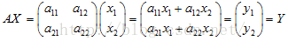

主成分分析PCA以及特徵值和特徵向量的意義
定義：
主成分分析（Principal Component Analysis，PCA）， 是一種統計方法。通過正交變換將一組可能存在相關性的變數轉換為一組線性不相關的變數，轉換後的這組變數叫主成分。PCA的思想是將n維特徵對映到k維上（k<n），這k維是全新的正交特徵。這k維特徵稱為主成分，是重新構造出來的k維特徵，而不是簡單地從n維特徵中去除其餘n-k維特徵。
簡單解釋：
具體的，假如我們的資料集是n維的，共有m個數據。我們希望將這m個數據的維度從n維降到k維，希望這m個k維的資料集儘可能的代表原始資料集。我們知道資料從n維降到k維肯定會有損失，但是我們希望損失儘可能的小。那麼如何讓這k維的資料儘可能表示原來的資料呢？
我們先看看最簡單的情況，也就是n=2，k=1,也就是將資料從二維降維到一維。資料如下圖。我們希望找到某一個維度方向，它可以代表這兩個維度的資料。圖中列了兩個向量方向，u1和u2，那麼哪個向量可以更好的代表原始資料集呢？從直觀上也可以看出，u1比u2好，因為資料在這個方向上投影后的樣本點之間方差最大。
例子：
有兩維資料：
對X進行歸一化，使X每一行減去其對應的均值，得到：
求X的協方差矩陣：
求解C的特徵值，利用線性代數知識或是MATLAB中eig函式可以得到：
對應的特徵向量分別是：
將原資料降為一維，選擇最大的特徵值對應的特徵向量，因此P為：
降維後的資料：
那麼，為什麼要求特徵值和特徵向量呢？
特徵值和特徵向量：
定義： 設A是n階矩陣，如果數λ和n維非零向量x使關係式
……(1)
成立，那麼，這樣的數λ稱為矩陣A的特徵值，非零向量x稱為A的對應於特徵值λ的特徵向量，（1）式還可以寫為
……（2）
如果想求出矩陣對應的特徵值和特徵向量就是求式（2）的解了。
那麼，問題來了，這個式子要怎麼理解呢？
首先得先弄清矩陣的概念:一個矩陣代表的是一個線性變換規則，而一個矩陣的乘法執行代表的是一個變換;
比如有一個矩陣A：
一個列向量為X為：
一個矩陣的乘法為：

向量X通過矩陣A這個變化規則就可以變換為向量Y了
知道了這個就可以從幾何上理解特徵值和特徵向量是什麼意思了，由
可知:
所以，確定了特徵值之後，向量x的變換為：
引用《線性代數的幾何意義》的描述：“矩陣乘法對應了一個變換，是把任意一個向量變成另一個方向或長度都大多不同的新向量。在這個變換的過程中，原向量主要發生旋轉、伸縮的變化。如果矩陣對某一個向量或某些向量只發生伸縮變換，不對這些向量產生旋轉的效果，那麼這些向量就稱為這個矩陣的特徵向量，伸縮的比例就是特徵值。”
那麼這樣定義的特徵值和特徵向量有什麼實際用途呢?在這裡我舉個數據挖掘演算法中重要的一個演算法：PCA（主成分分析）來給大家直觀的感受一下。
首先，理解一下資訊量這個概念
看幾張圖：
如果我們單獨看某一個維度的話，比如看x1這個維度
可以看到將點投影到x1這個維度上看的話，圖1的資料離散性最高，圖3較低，圖2資料離散性是最低的。資料離散性越大，代表資料在所投影的維度上具有越高的區分度，這個區分度就是資訊量。如果我們用方差來形容資料的離散性的話，就是資料方差越大，表示資料的區分度越高，也就是蘊含的資訊量是越大的。
基於這個知識，如果我們想對資料進行降維的話，比如圖1的兩個維度的資料降成一維，我們可以選擇保留X1這個維度的資料，因為在這個維度上蘊含的資訊量更多。
同理，圖2就可以保留x2這個維度的資料。但是，問題來了，圖3應該保留哪個維度的資料呢？答案是保留哪個維度都不好，都會丟失較大的資訊量。但是，如果我們把圖3的座標軸旋轉一下
比較容易看出，圖3在新的座標軸下就能進行降維了。所以選取正確的座標軸，然後根據各個維度上的資料方差大小，決定保留哪些維度的資料，這樣的做法就是主成分分析的核心思想。
選取正確的座標軸的過程中，我們需要一個矩陣變換，就類似於這樣：
也就是：
其實，經過數學上的推導的，我們就可以知道，特徵值對應的特徵向量就是理想中想取得正確的座標軸，而特徵值就等於資料在旋轉之後的座標上對應維度上的方差。
也就是說，直接求出矩陣A的特徵向量得出對應的特徵向量。我們就能找到旋轉後正確的座標軸。這個就是特徵值和特徵向量的一個實際應用：“得出使資料在各個維度區分度達到最大的座標軸。”
所以，在資料探勘中，就會直接用特徵值來描述對應特徵向量方向上包含的資訊量，而某一特徵值除以所有特徵值的和的值就為：該特徵向量的方差貢獻率（方差貢獻率代表了該維度下蘊含的資訊量的比例）。
通常經過特徵向量變換下的資料被稱為變數的主成分，當前m個主成分累計的方差貢獻率達到一個較高的百分數（如85%以上）的話，就保留著這m個主成分的資料。實現了對資料進行降維的目的。整個主成分分析的演算法原理也就是這個。